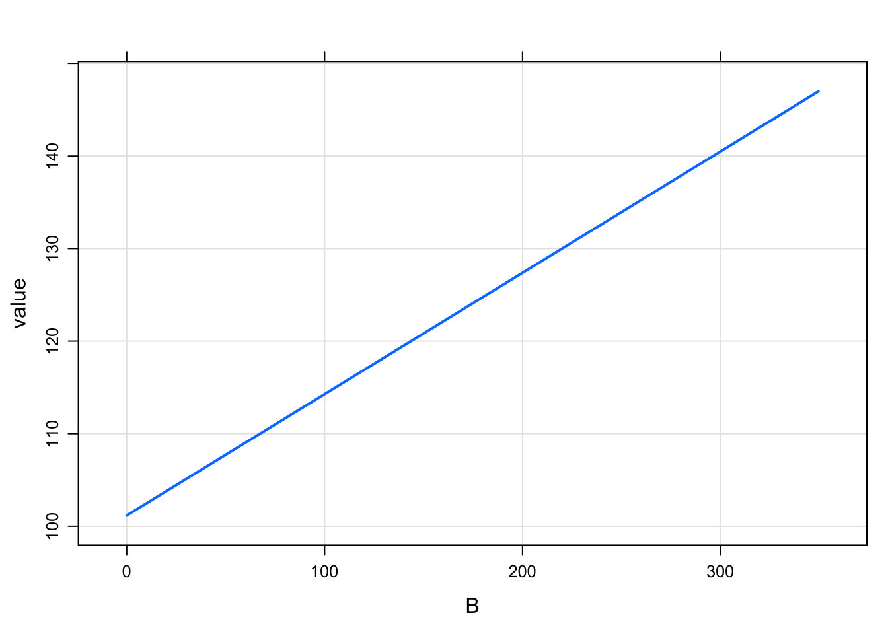

Introduction
This post introduces a new formal code block for writing models where there are no compartments. The block is named after the analgous NONMEM block called $PRED. This functionality has always been possible with mrgsolve, but only now is there a code block dedicated to these models. Also, a relaxed set of data set constraints have been put in place when these types of models are invoked.
Status
The functionality in this vignette can only be access from the GitHub version. We will update this vignette once these features are rolled into a release on CRAN.
Example model
As a most-basic model, we look at the pred1 model in modlib()
library(mrgsolve)
mod <- mread("pred1", modlib())## Building pred1 ... done.The model code is
$PROB
An example model expressed in closed form
$PARAM B = -1, beta0 = 100, beta1 = 0.1
$OMEGA 2 0.3
$PRED
double beta0i = beta0 + ETA(1);
double beta1i = beta1*exp(ETA(2));
capture Y = beta0i + beta1i*B;This is a random-intercept, random slope linear model. Like other models in mrgsolve, you can write parameters ($PARAM), and random effects ($OMEGA). But the model is actually written in $PRED.
When mrgsolve finds $PRED, it will generate an error if it also finds $MAIN, $TABLE, or $ODE. However, the code that gets entered into $PRED would function exactly as if you put it in $TABLE.
In the example model, the response is a function of the parameter B, so we’ll generate an input data set with some values of B
library(dplyr)
data <- data_frame(ID = 1, B = exp(rnorm(100, 0,2)))
head(data)## # A tibble: 6 x 2
## ID B
## <dbl> <dbl>
## 1 1 0.190
## 2 1 0.0632
## 3 1 1.24
## 4 1 3.62
## 5 1 0.0602
## 6 1 29.8out <- mrgsim_d(mod,data,carry.out="B")
plot(out, Y~B)
Like other models, we can simulate from a population
library(purrr)
set.seed(223)
df <- map_df(1:30, function(i) data_frame(ID = i, B = seq(0,30,1)))
head(df)## # A tibble: 6 x 2
## ID B
## <int> <dbl>
## 1 1 0
## 2 1 1
## 3 1 2
## 4 1 3
## 5 1 4
## 6 1 5mod %>%
data_set(df) %>%
mrgsim(carry.out="B") %>%
plot(Y ~ B)
PK/PD Model
Here is an implementation of a PK/PD model using $PRED
In this modeL
- Calculate
CLas a function ofWTand a random effect - Derive
AUCfromCLandDOSE - The response (
Y) is a calculated fromAUCand the Emax model parameters
code <- '
$PARAM TVCL = 1, WT = 70, AUC50 = 20, DOSE = 100, E0 = 35, EMAX = 2.4
$OMEGA 1
$SIGMA 100
$PRED
double CL = TVCL*pow(WT/70,0.75)*exp(ETA(1));
capture AUC = DOSE/CL;
capture Y = E0*(1+EMAX*AUC/(AUC50+AUC))+EPS(1);
'mod <- mcode("pkpd", code)## Building pkpd ... done.To simulate, look at 50 subjects at each of 5 doses
data <-
expand.idata(DOSE = c(30,50,80,110,200),ID = 1:50) %>%
mutate(WT = exp(rnorm(n(),log(80),1)))
head(data)## ID DOSE WT
## 1 1 30 59.13254
## 2 2 50 317.32739
## 3 3 80 242.15746
## 4 4 110 170.78136
## 5 5 200 248.18054
## 6 6 30 51.22012out <- mrgsim_d(mod,data,carry.out="WT,DOSE") %>% as_data_frame()
head(out)## # A tibble: 6 x 6
## ID time WT DOSE AUC Y
## <dbl> <dbl> <dbl> <dbl> <dbl> <dbl>
## 1 1 0 59.1 30 232. 111.
## 2 2 0 317. 50 36.8 85.3
## 3 3 0 242. 80 36.5 98.9
## 4 4 0 171. 110 23.7 80.3
## 5 5 0 248. 200 331. 109.
## 6 6 0 51.2 30 252. 116.Plot the response (Y) versus AUC, colored by dose
library(ggplot2)
ggplot(out, aes(AUC,Y,col =factor(DOSE))) +
geom_point() +
scale_x_continuous(trans = "log", breaks = 10^seq(-4,4)) +
geom_smooth(aes(AUC,Y),se = FALSE,col="darkgrey") + theme_bw() +
scale_color_brewer(palette = "Set2", name = "") +
theme(legend.position = "top")## `geom_smooth()` using method = 'loess' and formula 'y ~ x'